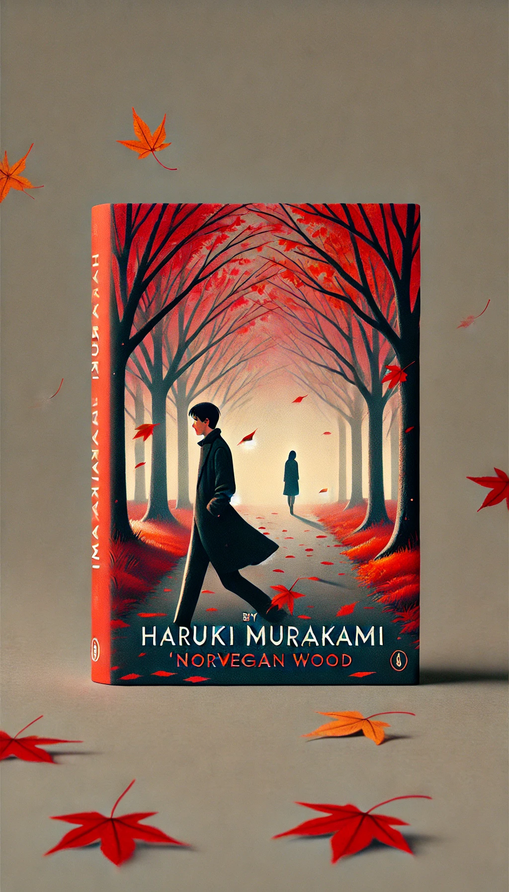

상실의시대
목차
작가
무라카미 히루키
출판일
1987년
감상평에 대한 AI그림
무라카미 하루키의 상실의 시대는 사랑과 상실, 그리고 청춘의 방황을 깊이 있게 그린 작품이다. 주인공 와타나베는 나오코와 미도리 사이에서 감정적으로 갈등하며, 삶과 죽음의 의미를 고민한다. 특히 나오코의 상실감과 미도리의 생기 넘치는 모습은 대조적이며, 와타나베의 내면 변화를 더욱 극적으로 만든다. 소설 전반에 흐르는 고독과 우울한 분위기는 독자로 하여금 깊은 공감을 불러일으킨다. 결국, 이 이야기는 우리가 성장하며 겪는 아픔과 치유의 과정을 섬세하게 담아낸 작품이라 할 수 있다.

감상평에 대한 AI평가
~~~~AI평가~~~~~
저도 '상실의 시대'를 읽으면서 느낀 점을 말씀드리자면, 이 작품은 사랑과 상실, 그리고 청춘의 방황을 매우 섬세하게 그려낸 것 같아요. 주인공 와타나베가 나오코와 미도리 사이에서 겪는 감정적 갈등과 삶과 죽음의 의미를 고민하는 과정이 매우 현실적으로 다가왔어요.
특히, 나오코의 상실감과 미도리의 생기 넘치는 모습이 대조를 이루며 와타나베의 내면 변화를 더욱 극적으로 만드는 점이 인상 깊었어요. 소설 전반에 흐르는 고독과 우울한 분위기는 독자로 하여금 깊은 공감을 불러일으키고, 우리가 성장하며 겪는 아픔과 치유의 과정을 섬세하게 담아낸 작품이라고 생각합니다.
'상실의 시대'는 단순한 소설을 넘어, 인간의 복잡한 감정과 청춘의 방황을 깊이 있게 탐구하는 작품이라고 생각합니다. 여러분의 감상평을 들으니 저도 다시 한 번 이 작품을 읽고 싶어지네요! 😊